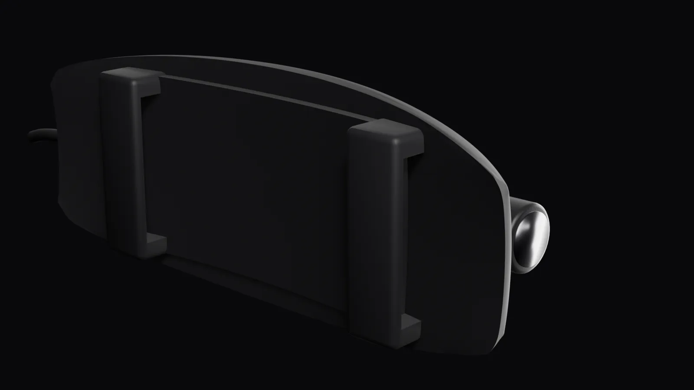
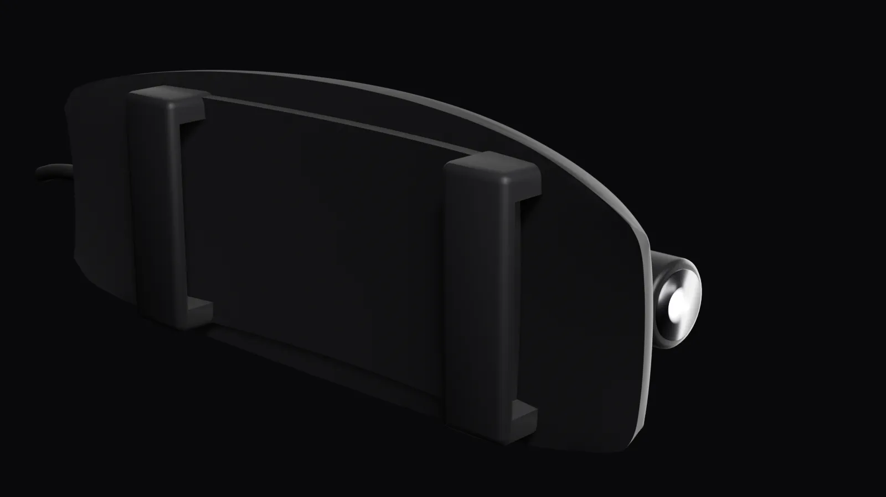
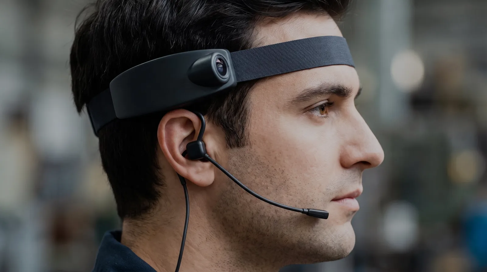
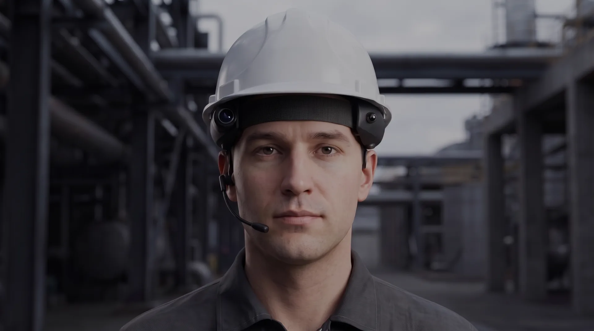
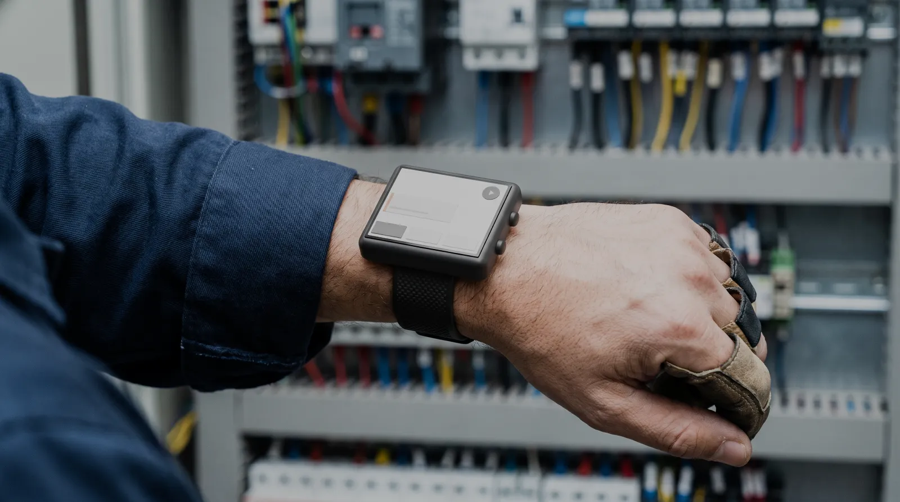
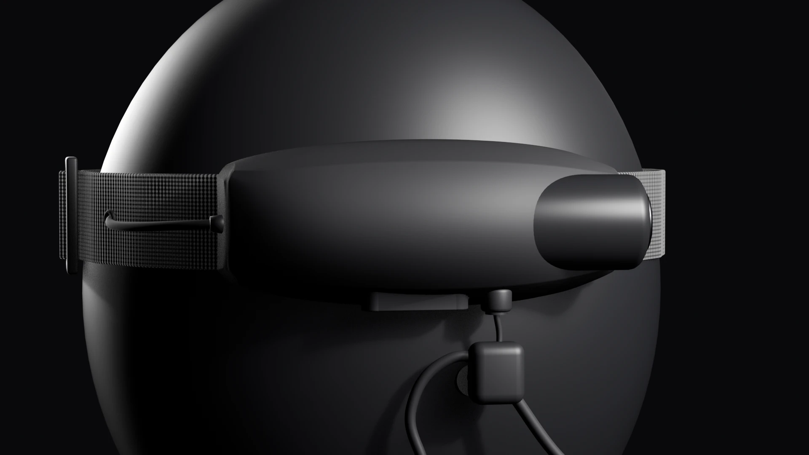

Vê o que o técnico vê. Responde no ouvido.Sem tirar as mãos do trabalho.


O conjunto de áudio encaixa no jack P3 sob o módulo da câmera — sem cabo pendurado no caminho.




BravoLabs · Loja Interativa